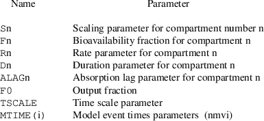
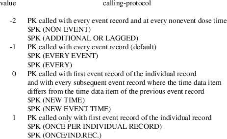
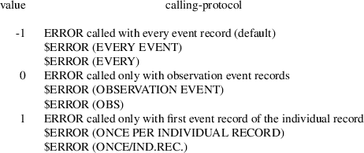
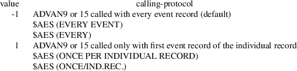

NM-TRAN is designed to facilitate the use of PREDPP. This chapter addresses special considerations regarding the use of NM-TRAN with PREDPP.
Here follows an example of an NM-TRAN control stream; it is meant to be used with PREDPP along with the NM-TRAN data set shown in Appendix VI. This NM-TRAN control stream is recorded on the NONMEM distribution medium; see Guide III. The control stream and data set are constructed so to accomplish the same things as do the control stream and data set considered in chapter I, but they are constructed on the assumption that PREDPP is to be used. NM-TRAN will translate the data set and control stream to a NONMEM data set, a NONMEM control stream, and completely coded PK and ERROR subroutines. These NM-TRAN outputs are given in Appendix VII. The effect of using them as inputs to a NONMEM run will be to produce essentially the same output obtained from using the NONMEM control stream and PK and ERROR subroutines shown in Appendix II of Guide VI.
$PROB THEOPHYLLINE POPULATION DATA $INPUT ID DOSE=AMT TIME CP=DV WT $DATA THEOPP $SUBROUTINES ADVAN2 $PK ;THETA(1)=MEAN ABSORPTION RATE CONSTANT (1/HR) ;THETA(2)=MEAN ELIMINATION RATE CONSTANT (1/HR) ;THETA(3)=SLOPE OF CLEARANCE VS WEIGHT RELATIONSHIP (LITERS/HR/KG) ;SCALING PARAMETER=VOLUME/WT SINCE DOSE IS WEIGHT-ADJUSTED CALLFL=1 KA=THETA(1)+ETA(1) K=THETA(2)+ETA(2) CL=THETA(3)*WT+ETA(3) SC=CL/K/WT
$THETA (.1,3,5) (.008,.08,.5) (.004,.04,.9) $OMEGA BLOCK(3) 6 .005 .0002 .3 .006 .4
$ERROR
Y=F+EPS(1)
$SIGMA .4
$EST MAXEVAL=450 PRINT=5 $COV $TABLE ID DOSE WT TIME $SCAT (RES WRES) VS TIME BY ID
When PREDPP is used, EVID and MDV data items are required in the NONMEM data set. When PREDPP is used, MDV data items need not be included in the NM-TRAN data set; NM-TRAN can automatically include them in the NONMEM data set. Such MDV data items are called generated MDV data items
Under certain circumstances, NM-TRAN can also automatically include EVID data items in the NONMEM data set. Such EVID data items are called generated EVID data items
If EVID data items are not included in the NM-TRAN data set, they are generated as follows: If each of the AMT and RATE data items in an event record is either 0, or is represented by a NM-TRAN null data item, or is missing, then the generated EVID data item is 0 (meaning that the event is an observation event). Otherwise, the generated EVID data item is 1 (meaning that the event is a dose event). If there are other-type, or reset, or reset-dose events in the data set, then the user himself should supply EVID data items.
If MDV data items are not included in the NM-TRAN data set, they are generated as follows: If the data record is the last record of an event record, then the generated MDV data item is 0 or 1 according as the EVID data item (generated or user-supplied) is 0 or not 0. If the data record is not the last record of an event record, then the generated MDV data item is 1.
With PREDPP, interdose interval (II) data items may appear. NM-TRAN can translate II data items expressed in the form hr:min to II data items expressed in the form hr.fr, where min (minutes) can be any two-digit integer from 00 to 59, and fr is a decimal fraction of the hour to two digits. Here hr (hours) can be any nonnegative integer. Examples of II data item translation are these: 1:30 @->@ 1.50; 1.30 @->@ 1.30. Note that if the data item has a colon, it is translated; otherwise, it is left unchanged. It is the user’s responsibility to make sure that the units of the TIME data items and the II data items are consistent. For example, suppose that TIME data items in the NM-TRAN data set are expressed as relative times in minutes; they are then left unchanged by NM-TRAN. II data items in the NM-TRAN data set should then also be expressed in minutes, and they should not contain colons so that NM-TRAN leaves them unchanged.
With NONMEM 7.3, values may also have the form hh:mm:ss (i.e., hours:minutes:seconds). As described in Chapter II, the TRANSLATE option of the $DATA record was new to NONMEM V and has been expanded with NONMEM 7.3. Any values may be given for dividing TIME and II values, and any precisions may be requested. An example is:
$DATA TRANSLATE (II/0.01/6)
which divides II values by 0.01, and writes 6 digits to the right of the decimal for the II data item. See Help guide for more details.
There are a few control records which are specific to the use of PREDPP. These are described in the following subsections, along with details concerning the nonspecific control records which are pertinent to the use of PREDPP only. A listing of NM-TRAN control records and options which should be used with PREDPP is given in Appendix V.
The $INPUT record is described in detail in section III.B.2.
NM-TRAN recognizes these
PREDPP-specific reserved labels: EVID,
TIME, AMT, RATE, SS,
II, ADDL, CMT, PCMT,
CALL. By using any one of these labels in an item
of the $INPUT record, the user defines the PREDPP data item
type whose name corresponds to the label.
With NONMEM 7.2, the following labels are also recognized:
XVID1, XVID2, XVID3,
XVID4, XVID5. These stand for
"extra" EVIDs. They are used with the
"Repeated Observation Records" feature for
specialized methodologies such as stochastic differential
equations ("sde"). See Introduction to NONMEM 7.3
and Guide VIII and on-line help.
When PREDPP is not used, any of these labels can be used, but with the exception of TIME, they have no special significance.
Ignoring items with the
DROP or SKIP labels, the total number of
items in a NM-TRAN data record cannot exceed PD in
resource/SIZES.f90 (default is 50; See Chapt III),
including generated EVID data items, generated MDV data
items, and, if the data set is single-subject, generated ID
data items (all of which actually do not appear in the
NM-TRAN data set). Generated EVID data items are assigned
the label EVID, and generated MDV data items are
assigned the label MDV. These labels can be used in
subsequent NM-TRAN control records of the problem
specification.
$BIND @value sub 1@ @value sub 2@ ... @value sub n@
E.g.
$INPUT ID DOSE=AMT TIME CP=DV WT PREP $BIND - - - - NEXT DOSE
This record is used in conjunction with the $INPUT record to further define the meaning of certain data items occuring as right-hand quantities in an abbreviated code for PK when PK is called at nonevent dose times (see below and Guide VI, section III.B.2). (Normally, PK is not called at these times.) At such calls, PK has access to several different data items of the same type, from several different event records. The definitions in the $BIND record precisely determine which of these data items are represented by the label for the data item type used in the abbreviated code.
This record is optional. If it appears, it must be with the first problem specification, and only with this problem specification. It can only be used when an abbreviated code for PK is also used.
There appear n values, where n should not exceed the total number of labels listed on the $INPUT record, including all DROP and SKIP labels. The ith value corresponds to the ith label.
A nonevent dose time is a time that a lagged dose or additional dose enters, or starts to enter, the system. It is some time after the event time occuring on the dose record. When PK is called at such a time, information from three event records is available. These are the dose record itself, the last event record, and the next event record. The last event record is the last event record with event time occuring before the nonevent dose time. The next event record is the first event record with event time occuring after the nonevent dose time. This event record is also called the argument record (see Guide VI, section III.B.2). PK is called at nonevent dose times only if a certain PK calling-protocol is requested (see section C.5).
Some data item types are NONMEM data item types: ID, L2, MDV, DV, and these are not affected by the $BIND definitions. At a nonevent dose time, these labels always represent the data items from the dose record; this is the mandatory representation. Some data items types are PREDPP data item types: AMT, RATE, SS, ADD, II, MT, CMT, CALL, EVID, and these are not affected by the $BIND definitions. These labels also always represent the data items from the dose record; this is the mandatory representation. The TIME data item type is a PREDPP data item type, and it is not affected by the $BIND definition; the label always represents the time data item from the next event record. The other data item types (labeled WT and PREP in the above example) are only recognized and responded to by the user’s PK routine. With the $BIND record the user may define the label of such a data item type to represent the data item from the dose record, the last event record, or the next event record. If a label definition for a data item type is not given explicitly, then by default the label represents the data item from the next event record.
If the value is (explicitly) DOSE, LAST, or NEXT, the label represents the item from the dose record, the last event record, or the next event record, respectively. If one of these values is used, it should not contradict the mandatory representation for the label (of a NONMEM or PREDPP data item). The value ’-’ serves as a place holder; a value is assumed that corresponds to the mandatory or default representation. If the number n is less than the total number of labels listed on the $INPUT record, the values corresponding to the remaining labels are taken to correspond to the respective mandatory and default representations. If the $BIND record is not used, the values corresponding to all labels are taken to correspond to the respective mandatory and default representations.
In the above example, in abbreviated PK code the variable PREP denotes the preparation indicator on the dose record describing the dose entering the system at a nonevent dose time. If the $BIND record is not used, the variable denotes the preparation indicator on the next event record, which may not even be a dose record. The variable WT denotes the weight on the next event record, which is the default representation.
If the label in the $INPUT record is DROP or SKIP, the issue of label representation is moot and is ignored. In this case the value can be ’-’, or it can be DROP or SKIP.
$INPUT and $BIND records may be interleaved to help maintain a perspicuous visual relationship in the control stream. The above example might have been written thusly:
$INPUT ID DOSE=AMT TIME CP=DV $BIND - - - - $INPUT WT PREP $BIND NEXT DOSE
As with changes to the $INPUT record, changes to the $BIND record may cause changes to the generated codes. In this case care should be taken in using the previous load module.
Even when a value is LAST or NEXT, it is still possible for an abbreviated code for PK to access the data item in the dose record; see section C.5.
$BIND has no effect when PK is called at a model event time (MTIME).
$SUBROUTINES [@subname
sub 1 = name sub 1@] [@subname sub 2 = name sub 2@] ...
[SUBROUTINES=kind]
[TOL=@n sub 1@] [ATOL=@n sub 2@]
[SSTOL=@n sub 3@] [SSATOL=@n sub 4@]
[DES=COMPACT|DES=FULL]
E.g.
$SUBROUTINES ADVAN=ADVAN8 TOL=4
NM-TRAN recognizes these additional subnames: ADVAN, SS, TRANS, PK, ERROR, DES, AES, INFN, TOL, MODEL
The first two subnames,
ADVAN and SS, are not generic names
of subroutines which can be user-supplied, in contrast to
all other possible subnames which can appear in the
$SUBROUTINES record. Rather, they are generic names of
subroutines from the PREDPP Library. With PREDPP the subname
ADVAN must appear and be set equal to one of the
names: ADVAN1, ADVAN2, ..., whichever
specific ADVAN routine is chosen from the Library.†
----------
ADVAN stands for
ADVANCE because it is the task of each ADVAN routine
to advance the state vector of compartment amounts (and
partial derivatives of the compartment amounts with respect
to random variables, when appropriate) from each point in
time to the next. Another possible name for ADVAN would have
been SOLVER, because most ADVAN routines solve a set of
differential equations, either analytically (ADVAN1-5,
ADVAN7, ADVAN11, ADVAN12) or by integration (ADVAN6, ADVAN8,
ADVAN9, ADVAN13, ADVAN14, ADVAN15).
----------
The subname SS need appear only if steady-state data items are included in the data set. Even then, if subroutine ADVANk is chosen, it will be assumed that subroutine SSk is also chosen, and the subname-name pair SS=SSk need not appear. (If ADVAN8 or ADVAN10 is chosen, it will be assumed that subroutine SS6 is also chosen.)
The third subname, TRANS, is a generic name of a subroutine which can come from the PREDPP Library or be user-supplied. If the subroutine comes from the Library, the name must be either TRANS1, or TRANS2, etc. If the subroutine is user-supplied, the name must be different from any name of a TRANS routine in the Library. A subname-name pair for the TRANS routine need not be given; then TRANS=TRANS1 is "understood".
If the PK subroutine is not user-supplied, so that PK is not used as a subname, then an abbreviated code must be given for PK. If the ERROR subroutine is not user-supplied so that ERROR is not used as a subname, then an abbreviated code must be given for ERROR. Abbreviated codes may be given for neither routine, or for only one of them, or for both of them.
Whether the DES routine is used depends on the ADVAN routine used. Similarly, whether the AES routine is used depends on the ADVAN routine used. If the DES (AES) routine is required by the ADVAN routine, and if it is not user-supplied, so that DES (AES) is not used as a subname, then an abbreviated code must be given for DES (AES). Abbreviated code for the AES routine is actually given by two abbreviated codes; see sections C.8 and C.9.
The INFN routine is always called by PREDPP. If it is not user-supplied, the INFN routine from the PREDPP library is used. It is a stub that does nothing. INFN may be user supplied or defined by an $INFN routine (see section C.11).
Whether the TOL routine is used depends on the ADVAN routine used. Similarly, whether the MODEL routine is used depends on the ADVAN routine used.
If the TOL routine is required by the ADVAN routine, and if it is neither user-supplied nor defined by a $TOL record (see section C.10), so that TOL is not used as a subname, then using the TOL option, NM-TRAN will generate a complete FORTRAN coded TOL subroutine. The number @n sub 1@ with the TOL option is the number of accurate digits (NRD; "Number of required digits") required in the computation of all compartmental drug amounts. As a rule of thumb, one should begin by taking @n sub 1@ to be @n+1@ or @n+2@, or with double precision, perhaps to @n+2@ or @n+3@, where @n@ is the option value with the SIGDIGITS option on the $ESTIMATION record. If one succeeds with this setting, one might try increasing @n sub 1@ slightly. With ADVAN9 the number of accurate digits can be specified on a compartment-specific basis. However, to do this, either a TOL routine must be user-supplied or the $TOL record must be used.
With ADVAN13, the TOL option of the $SUBROUTINE record (or the $TOL record) is a relative tolerance. It should specify larger NRD values than for other ADVANs (e.g., ADVAN6). ATOL (Absolute tolerance) may be specified on the $ESTIMATION or $COVARIANCE record.
With NONMEM 7.4, one or more additional options ATOL=@n sub 2@, SSTOL=@n sub 3@, SSATOL=@n sub 4@ are also permitted on the $SUBROUTINES record.
ATOL specifies the absolute
tolerance for ADVAN9, ADVAN13, ADVAN14, and ADVAN15.
Optional. Default is 1.0E-12.
SSTOL specifies the relative tolerance for Steady State
evaluation. Optional. Default is TOL.
SSATOL specifies the absolute tolerance for Steady State
evaluation. Optional. Default is ATOL.
The generated TOL routine will set values as follows for the options that are coded:
NRD(1)=@n sub 1@ (The TOL option) ANRD(1)=@n sub 2@ (The ATOL option) NRD(0)=@n sub 3@ (The SSTOL option) ANRD(0)=@n sub 4@ (The SSATOL option)
It is also possible to code TOL=name to specify the name of a user-supplied TOL routine, or to include $TOL abbreviated code, either of which allows all these values to be assigned by compartment. A user-supplied TOL routine also allows values to be assigned for each NONMEM step and problem. See also the ATOL option of the $ESTIMATION record, and the TOL and ATOL options of the $COVARIANCE record.
If the MODEL routine is required by the ADVAN routine, the MODEL routine may be user-supplied. Then the PK routine must also be be user-supplied If a DES (AES) routine is needed, then it too must be user-supplied. If the MODEL routine is not user-supplied, so that MODEL is not used as a subname, then using information supplied in the $MODEL record (see next section C.4), NM-TRAN will generate a complete FORTRAN coded MODEL subroutine. In this case an abbreviated code for PK may be given, as may abbreviated codes for DES and AES.
Each of the subnames ADVAN, SS, and TRANS, along with the equal sign that follows it, may be omitted when it is followed by a specific name of a PREDPP Library routine; see, for example, the control stream in section A. However, when the subname is not omitted, the specific name of a PREDPP Library routine can be given by the associated number only, e.g. ADVAN=1 instead of ADVAN=ADVAN1.
The $SUBROUTINES record may be used with PREDPP to supply "OTHER" routines, as described in chapter III. An example is given in NONMEM 7 guide, "Stochastic Differential Equation Plug-In(NM72)". The code in sde9.ctl is
SUBROUTINE ADVAN6 TOL=9 DP OTHER=SDE.f90
The file SDE.f90 is found in the examples directory.
$MODEL
[NCOMPARTMENTS=@n sub 1@] [NEQUILIBRIUM=@n
sub 2@] [NPARAMETERS=@n sub 3@]
[COMPARTMENT=([name] [@attribute sub 1@] [@attribute sub
2@] ...)] ...
[LINK @compname sub a@ [TO|AND]
@compname sub b@ BY k [l]] ...
[I_SS=@n@]
E.g.
$MODEL NPARAMETERS=3 NCM=2†
COMP=(DEPOT DEFDOSE INITIALOFF) COMP=(CENTRAL DEFOBS NOOFF)
LINK DEPOT CENTRAL BY 3
LINK CENTRAL OUTPUT BY 1
----------
Option NCM=2 is needed
with versions of NONMEM prior to NONMEM 7.4.1 to avoid a
spurious error message from NM-TRAN.
----------
This record gives information from which NM-TRAN can generate the complete FORTRAN coded MODEL routine.
This record is required when the ADVAN routine requires a MODEL routine, and this routine is not user-supplied. It is only required for the first problem specification. It applies for all problem specifications in the control stream, and it must not appear with a problem specification other than the first.
The number @n sub 1@ is the total number of compartments other than the output compartment. The maximum vale of @n@ is given by constant PC in resource/SIZES.f90; With NONMEM 7, the default is 30. (The value may be over-ridden by user via $SIZES record up to a maximum of 999). The NCOMPARTMENTS option may be coded as NCM or NCOMPS.
If the NCOMPARTMENTS option is omitted, this number is taken to be the number of COMPARTMENT clauses that appear in the record (and its continuation records).
The number @n sub 2@ is the number of equilibrium compartments; this number must not exceed @n sub 1@. If the NEQUILIBRIUM option is omitted, this number is computed from the attributes of the COMPARTMENT clauses. If the option is used, however, then the last @n sub 2@ compartments are understood to be equilibrium compartments, whether or not any of these compartments are defined with COMPARTMENT clauses which include the EQUILIBRIUM attribute.
The number @n sub 3@ is the number of explicit (and implicit; see sections C.7-9) basic PK parameters. When an abbreviated code for the PK routine is used, the NPARAMETERS option may be omitted. (When implicit basic PK parameters are defined, this is a convenient practice.) In this case, and in the case of a general linear model, the number of basic PK parameters is the total number of K-type parameters recognized in the abbreviated code. In the case of a general nonlinear model and TRANS1, the number of basic parameters is the larger of (i) the largest subscript used with the P array in PK code, and (ii) the number of variables defined in PK abbreviated code and used in DES and/or AES abbreviated codes when such abbreviated codes are used. See next section C.5.
Each COMPARTMENT clause
defines a single compartment. The compartments are numbered
in the order in which their defining clauses appear in the
record (and its continuation records). The name is the name
given to the compartment, 1-8 characters from the FORTRAN
character set. If spaces or nonalphanumeric characters are
used, enclose the name in double or single quotes. With
NONMEM 7.4, the maximum number of characters is given by SD
in resource/SIZES.f90 (default is 30).
The name may not be one of the compartment attributes below,
unless it is enclosed in single or double quotes. E.g.,
COMP=(DEFOBS) is not permitted but
COMP=("DEFOBS",DEFOBS) is permitted.
If omitted, the name COMP n is given to the
compartment, where n is the compartment number. The
compartment name is used in PREDPP problem summary pages and
in LINK clauses in the $MODEL record. The name of
the output compartment and the attributes of this
compartment are set by PREDPP. For the purposes of NM-TRAN,
the name of the output compartment is OUTPUT, and
its number is 0 or @n sub 1 + 1@, either will do.
With NONMEM 7.5, compartment names defined in $MODEL are automatically available for substitution without requiring $ABBR REPLACE records. This is called "implicit" compartment name replacement. For example:
$MODEL COMP=(DEPOT)
allows substitutions to be made for A(DEPOT), DADT(DEPOT) etc, in abbreviated code:
$DES DADT(DEPOT)=-KA*A(DEPOT)
The compartment number 1 is present in the generated subroutines.
Each attribute is one of:
INITIALOFF, NOOFF, NODOSE,
DEFOBSERVATION, DEFDOSE,
EQUILIBRIUM, EXCLUDE. When an attribute is
used, it specifies the opposite of the default attribute.
The default attributes are: The compartment is initially on,
may be turned on and off, may receive a dose, is not the
default observation compartment, is not the default dose
compartment, is not an equilibrium compartment, is included
in the computation for the output compartment. If a
user-defined comparment has attributes INITIALOFF
NODOSE then it is initally off, may be turned on and
off, and may not receive a dose. Such a compartment is
called an output-type compartment. There may be more
than one.†
----------
† Output-type
compartments have been part of PREDPP since the first
version, but were not discussed in detail. For such
compartments, the value of CMT may be negative on an
obervation record to obtain an observation and turn the
compartment off, just as it may with the default output
compartment.
----------
Attributes EQUILIBRIUM and EXCLUDE are used only with ADVAN9 and ADVAN15, and the attribute NODOSE may be omitted when EQUILIBRIUM is also used, for it is then the default. Definitions for equilibrium compartments must follow the definitions for the nonequilibrium compartments.
If no attributes are used, the parentheses may be omitted. If neither compartment name nor attributes are used, i.e. the clause is simply COMPARTMENT, a compartment is defined where all defaults apply. In this case if the clause does not end the $MODEL record, it must be followed by a comma.
If no compartment has the attribute DEFOBSERVATION, the first compartment defined with the name CENTRAL is given the attribute.
If there is no such compartment, the first compartment is given the attribute DEFOBSERVATION. With versions of NONMEM prior to 7.4.1 a compartment that is initially off could thus be assigned as DEFOBSERVATION. This results in an error message if the PCMT data item is not used to specify explicitly which compartment should be used for the prediction associated with a dose or other-type event. With 7.4.1, the first compartment that is not INITIALOFF is given the attribute DEFOBSERVATION and PCMT is not needed.
If no compartment has the attribute DEFDOSE, the first compartment defined with the name DEPOT and which may receive doses is given the attribute. If there is no such compartment, the first compartment which may receive doses is given the attribute.
The LINK clauses need only be used with general linear models and only when the PK routine is user-supplied. When an abbreviated code for PK is used, this code accomplishes what the LINK clauses otherwise accomplish, and LINK clauses should not be used. A LINK clause defines a route of first-order drug distribution between the compartment A with name @compname sub a@ and the compartment B with name @compname sub b@. These names are established in the COMPARTMENT clauses. A compartment number, rather than a compartment name, can be used. If distribution occurs from A to B, the TO symbol is used. The LINK clause also specifies the internal number given to the rate constant quantifying the first-order distribution. This is the number k following the BY symbol. (It is the number of the row of the GG array where, as a result of basic parameter translation by the TRANS routine, the typical/subject-specific value and @eta@ derivatives for the rate constant can be located; see Guide VI, section III.M.) If distribution occurs in both directions, the AND symbol is used. In this case the number k is the internal number of the rate constant quantifying first-order distribution from A to B, and l is the internal number of the rate constant quantifying distribution from B to A. Both k and l must not exceed @n sub 3@.
K is an alias for LINK. Also, the symbol BY may be coded IS, or =, or omitted. This allows a unidirectional link to be tersely coded as: Kmn=k (which is equivalent to LINK m TO n BY k). When the number of compartments exceeds 10, the LINK clause syntax Kmn=k may be ambiguous. The letter T may be used to separate the two compartment numbers KmTn.
Attributes DEFOBSERVATION and DEFDOSE may be abbreviated by initial substrings of length 4 or more.
I_SS= @n@ requests the Initial Steady-State feature of PREDPP (NONMEM VI). It may be used with the general non-linear models (ADVAN6, ADVAN8, ADVAN9, ADVAN13, ADVAN14, ADVAN15). Values of n are
0 No initial state state (the
default)
1 Initial steady state
2 Initial steady state, adds to current compartment amounts.
3 Initial steady state, use current compartment amounts as
initial estimates.
The results are identical to those that would be computed by a steady-state dose event record with SS=I_SS and AMT=0 and RATE=0. If endogenous drug is specified in the differential equations, non-zero initial conditions will be computed.
The example of a $MODEL record given at the beginning of this subsection serves to produce a MODEL subroutine which, along with ADVAN5 or ADVAN7 implementing a general linear model, and the (code generated from the) abbreviated code for PK given in the example of section A, has the same effect as using ADVAN2 and the abbreviated code for PK. The same $MODEL record, without the LINK clauses, may be used along with ADVAN5 or ADVAN7, and a suitable abbreviated PK code, to achieve the same effect; see the example in Appendix VIII. The same $MODEL record, without the LINK clauses, may be used along with ADVAN6, ADVAN8, ADVAN9, ADVAN13, ADVAN14, ADVAN15, and suitable abbreviated PK and DES codes, to achieve the same effect; see the example in Appendix VIII.
$PK
abbreviated code
This record gives an abbreviated code for the PK routine. It, along with all its continuation records is called a $PK block
This record is optional. If it appears, it must be with the first problem specification, and only with this problem specification. It must precede any $ERROR records in the problem specification. It cannot be used with a user-supplied MODEL subroutine (and should not be used with a user-supplied TRANS routine; see Guide VI, section III.M).
The basic PK parameters comprise the set of mandatory left-hand quantities. These depend on the ADVAN and TRANS subroutines used.
For any ADVAN among ADVAN1 through ADVAN4, and ADVAN10, ADVAN11, ADVAN12 (the analytic ADVAN’s), and for any TRANS which may be used with this ADVAN, the basic PK parameters are given in a list with that TRANS in Guide VI, section VII.C. The reserved variables symbolizing these parameters are those whose names are identical to the names used in the list.
For either ADVAN5 or ADVAN7 (the
general linear models), and for TRANS1 (which is the only
non-user supplied TRANS which may be used with these
ADVAN’s), the basic PK parameters are the rate
constants. The reserved variable symbolizing the rate
constant that quantifies the first-order distribution of
drug from compartment number m to compartment number n is
Kmn. (See section C.4 for a description of
compartment numbering.) The occurence of this variable on
the left of an assignment statement or conditional
assignment statement establishes the possiblity that this
distribution can take place. The variable
Km0 may be used instead of Kmn,
where n is the number of the output compartment.
When the number of compartments exceeds 10, the syntax
Kmn=k may be ambiguous. The letter T may
be used to separate the two compartment numbers
KmTn.
The rate constants are numbered (these numbers are used
internally by the ADVAN) according to the order in which
they appear in the abbreviated code. See the first example
in Appendix VIII.
For ADVAN6, ADVAN8, ADVAN9, ADVAN13, ADVAN14, ADVAN15 (the general nonlinear models), and for TRANS1, the reserved array elements symbolizing explicit basic PK parameters are P(1), P(2), etc. The value of the nth element of the P vector passed to DES and AES (see sections C.7-9 and Guide VI, sections VI.C, VI.E) is the value stored in P(n). These values, like other PK-defined items may be displayed; the appropriate labels are described below. Implicit basic PK parameters are discussed in sections C.7-9.
The additional PK parameters comprise a set of optional left-hand quantities. The reserved variables symbolizing these parameters are as follows:

Scaling parameters, bioavailablity fractions, the ouput fraction, and the time scale parameter default to the value 1 if they do not appear in the abbreviated code. Absorption lag parameters default to the value 0 if they do not appear in the abbreviated code.
See section C.4 for a description of compartment numbering. The variable FO or Fn, where n is the number of the output compartment, may be used instead of F0. The variable S0 may be used instead of Sn, where n is the number of the output compartment. The variable SC may be used to mean the scaling parameter with the central compartment. The variable XSCALE may be used instead of TSCALE. Whichever of the alternate variable names is used first for a basic or additional PK parameter, this name must be used consistently throughout the $PK block.
A model event time parameter MTIME(i) defines a time to which the system is advanced. When the time is reached, indicator variables are set and a call to PK is made. At this call (and/or subsequent to this call) PK or DES or AES or ERROR can use the indicator variables to change some aspect of the system, e.g., a term in a differential equation, or the rate of an infusion. MTIME(i) parameters are not associated with any specific compartment or dose. They are ignored if they have the value 0. MTIME parameters have no effect on steady-state doses; even if PK computes MTIME(i)< II, this produces future changes in the system, and does not apply retroactively to the preceding implied doses.
MTDIFF is an optional left-hand variable. It is of interest when model time parameters MTIME are used. The value of MTDIFF is 0 when PK is called. If PK sets MTDIFF to a value other than 0, e.g., MTDIFF=1, then PREDPP will understand that with that call to PK, the values of one or more of the MTIME(i) have possibly been reset. MTDIFF=0 (the default) can save considerable run time when there are many model time parameters. Note that the results are unpredictable if the times are in fact changed when MTDIFF=0.
Array elements A_0(1), ..., A_0(n) may be used on the left-hand to assign initial values to compartments. A reserved right-hand variable, A_0FLAG, is set to 1 by PREDPP when PK may initialize compartments to specific amounts. For example,
IF (A_0FLG.EQ.1) THEN compartment initialization block
ENDIF
A compartment initialization block includes statements such
as
A_0(n)=....
This specifies the initial amount for compartment n.
A_INITIAL(n) is a synonym for A_0(n).
The above code fragment is an explicit compartment
initialization block. A_0(n) may be assigned a
value with an unconditional statement. This defines an
implicit compartment initialization block. NMTRAN inserts
"IF (A_0FLG.EQ.1) ..." before the statement and
"ENDIF" after it. Indicator variables may be used
to avoid conditional assignment statements. See the help
items for Compartment Initialization.
A reserved left-hand variable I_SS may be set to the same values as the I_SS option of $MODEL record. This allows initial steady-state to be set conditionally, e.g., if some subjects are at steady-state and others are not.
There is a type of pseudo-statement specific to PK abbreviated code. It has the form CALLFL=n. The different permissible values for n imply different PK calling-protocols. A calling protocol phrase can be used instead of the CALLFL pseudostatement. The phrase must be enclosed in parentheses. Examples of phrases follow each value of CALLFL.

The value must be -2 when the $BIND record is used.
If the pseudo-statement does not appear, the value -1 is assumed. This allows PK to properly function in most situations.
Values 0 and 1 correspond to call-limiting protocols. Limiting calls to PK, when this causes no undesireable effect, can result in a substantial reduction in CPU time. The CALL data item can be used with a call-limiting protocol to override the protocol and force calls with specific event records; see Guide VI, section V.J. When n is 0 or 1, and the data are single-subject data, then PK is called with the first event record of the data set, instead of the first event record of the individual record.
As usual, the label of a data item type can be used as a variable in the abbreviated code. When PK is called at a nonevent dose time t, the data item referenced by a given label may refer to the data item on either the dose record or the next event record following t. The defaults are described in section C.2, and a method (using the $BIND record) is given for changing them.
There are several reserved variables and array elements symbolizing special right-hand quantities:
The variable ICALL symbolizes a special right-hand quantity. The values are identical to those for ICALL in PRED, as described in Chapter IV. It has the value 2 if the call is a regular call during data analysis, and the value 4 if the call is a regular call during data simulation. It has the value 5 if the call to PK occurs when expectations are being computed (the marginal data item MRG_ has a non-zero value for some records).
If there is abbreviated code in the $PK block that tests for ICALL=0, ICALL=1, or ICALL=3, this code is moved by NM-TRAN to the INFN routine as if it had been coded explicitly as part of an $INFN block. Such code is called $PK-INFN code. With verbatim code in the FIRST block (see section IV.I), ICALL will never have the value 0 or 3. ICALL has the value 1 if the call to PK is the first call to PK in the problem. At this call, the THETA’s are the initial estimates; the ETA’s are undefined. Verbatim code is not moved to the INFN routine.
The variable NEWIND symbolizes a special right-hand quantity. It has the value 0 when PK is called with the first event record of the data set. It has the value 1 when PK is called with the first event record of the second or subsequent individual record. It has the value 2 when PK is called with the second or subsequent event record of an individual record. With single-subject data individual records are defined in such a way that event records are contained in a number of different individual records; see section II.C.4.1. Therefore, except when the event record is the first data record of the data set and the value of NEWIND=0, the value of NEWIND can be 1 or 2.
The variable DOSTIM symbolizes a special right-hand quantity. It has a nonzero value only when CALLFL=-2 and PK is being called at a nonevent dose time (see section C.2), in which case the value is this time. DOSTIM should be regarded a random variable when any ALAGn variable is a random variable. In this regard, if any ALAGn is defined as a random variable, it must be defined as such before any occurence of the variable DOSTIM in an assignment statement.
The array element DOSREC(n) symbolizes a special right-hand quantity. It has a nonzero value only when CALLFL=-2 and PK is being called at a nonevent dose time, in which case it is the value of the nth data item in the (last data record of the) dose event record describing the dose. A label for a data item in the event record may be used instead of the integer n, e.g. one can use DOSEC(PREP) to symbolize the value of PREP on the dose event record. The $BIND record can also be used to insure that a variable such as PREP symbolizes the value on the dose event record. However, another example of the use of DOSREC, which is sometimes useful and with which the $BIND record cannot help as readily, is the use of DOSREC(TIME) to symbolize the value of TIME on the dose event record, i.e. the time the dose was actually administered.
PREDPP sets right-side variables MNOW and indicator variables MNEXT(i) and MPAST(i) when Model Event (MTIME(i)) parameters are defined. MNOW=i if MNEXT(i)=1 for some i. MNOW=0 otherwise. MNEXT(i)=1 during the advance from the previous time to MTIME(i). Otherwise, MNEXT(i)=0. The previous time may be an event time, a non-event time, or a model event time. MPAST(i)=0 until the call to PK subsequent to the one for which MNEXT(i)=1. At that call MPAST(i) becomes 1.
The array elements A(1), ..., A(n) symbolize special right-hand quantities, the amounts in compartments 1 through n. They are the latest computed compartment amounts when PK is called. This is the called the state-vector of compartment amounts. A right-hand variable TSTATE is the state-time, i.e., the time at which they were computed. In a population study, where @eta@ variables affect the drug amounts through their affect on PK parameters, these amounts are random variables. $OMEGA records referring to @eta@s explicitly used in $PK code should precede the $PK record, or if an $MSFI record is used, it should precede the $PK record and include the option NPOP=m. If an element A(n) appears, then the variable A cannot also be used.
Chapter IV describes the use of NONMEM MODULE NMPRD4. If COMRES=1 is not present in $ABBREVIATED or $PK records, then PK-defined variables are listed in NMPRD4 (see sections III.B.7 and IV.H) and may be used in other routines and blocks of abbreviated code. The symbol COM(n) may be used on the left or the right if n refers to a reserved position in MODULE NMPRD4 (see section III.E.3). Variables defined in $INFN and listed in MODULE PRINFN are also global and may be used in $PK and other blocks of abbreviated code, on the left and on the right. Variables defined by $ABBREVIATED DECLARE records are also global and may be used in $PK and other blocks of abbreviated code, on the left and on the right.
The abbreviated code may not use certain variables which occur as arguments to the PK subroutine. These variables are: IDEF, IREV, EVTREC, NVNT, INDXS, IRGG, GG, and NETAS.
Also, the array elements EPS(1), EPS(2), etc. may not be used in the abbreviated code for PK.
Variables which symbolize (first-, and second-) partial @eta@-derivatives of random variables defined in abbreviated code for PK are generated and displayable. The appropriate labels are the same as those used for the same kinds of derivatives computed in a generated code for PRED; see section IV.F.
Values of the variable P(n) are displayable. For this purpose, they are stored in a variable in MODULE NMPRD4 with name Pm, where m is an integer with 5 digits and equal to n, with leading 0’s if needed (invariably). The values of variables P00..., in particular, are labeled 6... in tables and scatterplots. E.g. The values of variable P00003 are labeled 6003 and are the values of P(3).
If the data are population data, calls to GETETA and SIMETA occur in PK, as they occur in PRED when the $PRED record is used (for some discussion of SIMETA, see section III.B.13), to obtain values for all the @eta@ variables. Both PK and ERROR contain the declaration
USE NMPRD_REAL,ONLY: ETA,EPS
so that ETA has the same value in both routines. (Generated PRED also declares ETA and EPS this way.)
PRED-error recovery (see section IV.G) is supported by PREDPP and NM-TRAN. This means that the EXIT statement described in section IV.G.2, when used in an abbreviated code for PK (or ERROR) generates an quick return to NONMEM with a PRED return code.
$ERROR
abbreviated code
This record gives an abbreviated code for the ERROR routine. It, along with all its continuation records is called a $ERROR block
This record is optional. If it appears, it must be with the first problem specification, and only this problem specification. It must succeed all $PK records in the problem specification.
There is only one mandatory
left-hand quantity: the quantity symbolized by Y
and described in section IV.A.
Y may be also used on the right, e.g.
LOGY=LOG(Y). (nmv)
There is a type of pseudo-statement specific to ERROR abbreviated code. It has the form CALLFL=n. The different permissible values for n imply different ERROR calling-protocols. A calling protocol phrase can be used instead of the CALLFL pseudostatement. The phrase must be enclosed in parentheses. Examples of phrases follow each value of CALLFL.

If the pseudo-statement does not appear, the value -1 is assumed.
Values 0 and 1 correspond to call-limiting protocols. Limiting calls to ERROR, when this causes no undesireable effect, can result in a substantial gain in CPU time. The CALL data item can be used with a call-limiting protocol to override the protocol and force calls with specific event records; see Guide VI, section V.J. When n is 1, and the data are single-subject data, ERROR is called only with the first event record of the data set, instead of the first event record of the individual record.
Another call-limiting protocol is implementable, but not with the use of a pesudo-statement in the abbreviated code for ERROR. With this protocol, calls to ERROR are limited to one per problem. This protocol is implemented whenever the abbreviated code consists of only one of the following statements:
Y=F+ERR(1) Y=F*(1+ERR(1)) Y=F+F*ERR(1) Y=F*EXP(ERR(1))
or with ETA or EPS occuring instead of ERR. This protocol is not implemented if verbatim code or a pseudo-statement is used in the $ERROR block. (In the last three cases the complete code instructs PREDPP that HH(1) contains @{partial log sp y} over {partial epsilon}@, and so in each case it is sufficient to set HH(1) to 1, and do this once only at an initial problem call to ERROR.)
With any call-limiting protocol, during the Simulation Step, ERROR is called with every event record.
As usual, the label of a data item type can be used as a variable in the abbreviated code.
The variable F symbolizes a special right-hand quantity: the value of the scaled drug amount in the observation or other designated compartment (see Guide VI, section V.H) at the event time. In a population study, where @eta@ variables affect the scaled drug amount through their affect on PK parameters, the scaled drug amount is a random variable.
The array elements A(1), ..., A(n) symbolize special right-hand quantities, the amounts in compartments 1 through n. This is the state-vector of compartment amounts. In a population study, where @eta@ variables affect the drug amounts through their affect on PK parameters, these amounts are random variables. If an element A(n) appears, then the variable A cannot also be used.
Variables defined in the $PK block can be used in the $ERROR block (unless variables are not listed in MODULE NMPRD4 in either PK or ERROR; see sections III.B.7 and IV.H). They may not be used on the left if they are random variables. The symbol COM(n) may be used on the left or the right if n refers to a reserved position in MODULE NMPRD4 (see section III.E.3). Variables defined in $INFN and listed in MODULE PRINFN are also global and may be used in $ERROR, on the left and on the right. Variables defined by $ABBREVIATED DECLARE records are also global and may be used in $ERROR, on the left and on the right.
The variable ICALL symbolizes a special right-hand quantity. It has the value 2 if the call to ERROR is a regular call during data analysis, and the value 4 if the call is a regular call during data simulation. It has the value 5 if the call to ERROR occurs when expectations are being computed (the marginal data item MRG_ has a non-zero value for some records). It has the value 6 if the call to ERROR occurs when raw data averages are being computed (the raw-data-average data item RAW_ has a non-zero value for some records).
If there is abbreviated code in the $ERROR block that tests for ICALL=0, ICALL=1, or ICALL=3, this code is moved by NM-TRAN to the INFN routine as if it had been coded explicitly as part of an $INFN block. Such code is called $ERROR-INFN code. With verbatim code in the FIRST block (see section IV.I), ICALL will never have the value 0 or 3. ICALL has the value 1 if the call to ERROR is the first call to ERROR in the problem. At this call, the THETA’s are the initial estimates; the ETA’s are undefined. Verbatim code is not moved to the INFN routine.
The variable NEWIND symbolizes another special right-hand quantity. It has the value 0 when ERROR is called with the first event record of the data set. It has the value 1 when ERROR is called with the first event record of the second or subsequent individual record. It has the value 2 when ERROR is called with the second or subsequent event record of an individual record. With single-subject data individual records are defined in such a way that event records are contained in a number of different individual records; see section II.C.4.1. Therefore, except when the event record is the first data record of the data set and the value of NEWIND=0, the value of NEWIND can be 1 or 2.
The abbreviated code may not use certain variables which occur as arguments to the ERROR subroutine. These variables are: IDEF, IREV, EVTREC, NVNT, INDXS, G, and HH.
Variables which symbolize (first-, second-, mixed-) partial @eta@-derivatives of random variables defined in abbreviated code for ERROR are displayable. They have names D....., where the dots stand for various combinations of 5 digits 0-9. The values of variables D00..., in particular, are labeled 3... in tables and scatterplots. E.g. The values of variable D00123 are labeled 3123. The label for the values of a variable D01..., or higher, is the first four characters of the variable name. E.g. The values of D05677 are labeled D056.
PRED-error recovery (see section IV.G) is supported by PREDPP and NM-TRAN. This means that the EXIT statement described in section IV.G.2, when used in an abbreviated code for PK or ERROR generates an quick return to NONMEM with a PRED return code.
The following discussion, relating to the $ERROR block, supplements that found in section II.C.4.2.
If (i) EPS’s are used in the $ERROR block, or (ii) a $SIGMA record is used, the data are inferred to be population data. If (iii) a $PK record is not used and a $OMEGA record precedes the $ERROR record, the data are inferred to be population data. This is true even if i and ii do not hold, and if ii does not hold, it is assumed that a record
$SIGMA DIAGONAL(n)
where n is the largest index used with an EPS or ERR in the $ERROR block, might have equivalently been used. If (iv) the NPOPETAS option is used on an $MSFI record with a positive option value, the data are inferred to be poulation data. If neither i, ii, iii, nor iv hold, the data are inferred to be single-subject. See section II.C.4
Suppose a $PK record is not used, a $ERROR record is used, and only ETA’s or only ERR’s occur in the $ERROR block. As a corollary of iii (and comments in sections III.B.10 and IV.A), the following hold:
An $OMEGA record can precede or follow the $ERROR record, in which case the data are taken to be population or single subject, respectively. If the $OMEGA record precedes the $ERROR record, then ERR’s must be used.
If an $OMEGA record precedes the $ERROR record, but is continued following the $ERROR record, the data are taken to be population data, and again ERR’s must be used.
If an $OMEGA
record is not used, the data are taken to be single-subject,
and it is assumed that a record
$OMEGA DIAGONAL(n)
where n is the largest index used with an ETA or
ERR in the $ERROR block, might have equivalently
been used.
If option LIKELIHOOD or -2LL is used on the $ESTIMATION record, NM-TRAN recognizes the data as odd-type data. The data are categorical, rather than continuous. Then @eta@ variables still represent random interindividual effects, and random intraindividual variablity exists, but it is expressed without the use of @epsilon@ variables or $SIGMA records. If the data are population and there is no $PK record, the $OMEGA block must precede the $ERROR block.
$DES
abbreviated code
This record gives an abbreviated code for the DES routine. It, along with all its continuation records, is called a $DES block
This record is optional. If it appears, it must be with the first problem specification, and only this problem specfication. It may not appear when the MODEL routine is user-supplied. Implicit basic PK parameters may be used in the $DES block (see below) only when the $PK block precedes the $DES block.
The mandatory left-hand quantities are the first-order derivatives of the differential equations, symbolized by DADT(n), for the derivative of the amount in compartment n (excluding the output compartment) with respect to time. At least one such array element must be defined.
Symbolic differentiation is used to obtain code used in the generated subroutine to compute the elements of the DA, DP, and DT arrays.
The allowable right-hand quantities include: current compartment amounts, symbolized by A(n), for the amount in the nth compartment (including both equilibrium compartments when they exist, but excluding the output compartment); PK parameters (obtained from TRANS1), symbolized by P(m), for the mth parameter; and time, symbolized by T. In a population study, where @eta@ variables affect the PK parameters, and, therefore, also affect the compartment amounts, these right-hand quantities should be regarded as random variables. However, @eta@-derivatives are not computed in the generated routine itself. For technical reasons, these right-hand quantities should be regarded as random variables even when the data are single-subject. This means, for example, that these variables may be used in conditional assignment statements subject to the usual restriction on random variables. (Drug input information is not available for computations; PREDPP itself incorporates this type of information appropriately.)
Also, a PK-defined item may be used as a right-hand quantity. However, when so used, it becomes a special quantity called an implicit basic PK parameter and a few special considerations apply:
Implicit basic PK parameters may be used in the $DES block only when the $PK block precedes the $DES block.
One should think of elements of the P array as including values for explicit basic parameters i.e. parameters defined in the $PK block in array elements P(n), followed by values for the implicit basic parameters. Therefore, the option value for the NPARAMETERS option in the $MODEL record should be large enough to include all these elements of this extended P array. Note: Explicit basic parameter values are displayable; see section C.5.
Even additional PK parameters become implicit basic PK parameters.
The symbol COM(n) may be used on the left or the right if n refers to a reserved position in MODULE NMPRD4 (see section III.E.3). Variables defined in $INFN and listed in MODULE PRINFN may be used in $DES, on the left and on the right. Variables defined by $ABBREVIATED DECLARE records are also global and may be used in $DES, on the left and on the right.
The abbreviated code may not use certain variables which occur as arguments to the DES subroutine. These variables are: IR, DA, DP, and DT.
Variables which symbolize partial derivatives in the DA array are displayable. They have names E......, where the dots stand for various combinations of 5 or 6 digits 0-9. (The number of digits depends on the version of NONMEM.)
Variables which symbolize partial derivatives in the DP array are displayable. They have names F......, where the dots stand for various combinations of 5 or 6 digits 0-9.
Variables which symbolize partial derivatives of the DT array are displayable. They have names E......, where the dots stand for various combinations of 5 or 6 digits 0-9.
With versions of NONMEM prior to NONMEM 7.4.1, the labels for variables which symbolize partial derivatives were converted to 4 characters, as described in earlier versions of the guide. The labels were not always unique or meaningful, although the values displayed were always correct. A work-around for earlier versions is to use an alias that is meaningful to the user. For example, with CONTROL7 and NONMEM 7.4.0, NM-TRAN generates a variable named E000004 for the "DERIVATIVE OF DADT(1) W.R.T. A(01)". If this is to be displayed in a table and a meaningful column header for the table is desired, an alias such as the following could be used:
$TABLE .... E000004=DADT1A1
DES-defined items may be displayed in tables or scatterplots and are computed at the event time in the data record.
Verbatim header statements "FIRST and "MAIN can be used.
An example of a $DES record, using implicit basic parameters, is given in Appendix VIII.
The following features were added starting with NONMEM V.
The allowable right-hand side quantities include the data items of a data record, symbolized by the labels and synonyms specified in the $INPUT record, and values of THETA, symbolized by THETA(1), THETA(2), etc. If quantities depending only on data items and THETA parameters are computed directly in $DES rather than $PK, improvement in run time is possible. A DES routine may test DOSTIM and DOSREC in a logical expression. It may use them on the right-hand side of an assignment statement. If DOSTIM is a random variable, DOSTIM must not be used in $DES. However, DOSTIM may always be used in a $PK block or PK routine to define a random variable which may be used in the DES routine.
A reserved right-hand variable, ISFINL (nmvi), is set to 1 by PREDPP when DES is called after the final advance to an event or non-event time, during Simulation or Copying pass (COMACT>0). One use of ISFINL is for DES to calculate quantities for display in tables or via WRITE statements.
ICALL cannot be used in DES
abbreviated code. The generated DES routine tests for
ICALL=1, performs PREDPP-required initialization code, and
then executes a RETURN statement. Values of DADT
are not evaluated at ICALL=1, as may happen with a
user-written DES routine, so there is no need for a test of
ICALL in the abbreviated code.†
----------
† NONMEM V
Supplemental Guide Section 82 ($DES Record) states
incorrectly that ICALL blocks testing for ICALL values 4 and
5 are permitted.
----------
With ADVAN9 and ADVAN15, a $DES block may not appear when there are only equilibrium compartments. With ADVAN10 and steady-state doses with constant infusion doses, basic PK parameters KM and VM may be used in the $DES abbreviated code.
NM-TRAN generates the appropriate code in FSUBS. Details are in Guide VI, Chapter VI.
The $ABBREVIATED record has an option that affects the formats of arrays in the generated DES subroutine:
$ABBR DES=FULL vs DES=COMPACT
Normally, there is no reason for the user to supply this option. NM-TRAN will choose the appropriate format. Details are in Guide VI, Appendix IV.
$AESINITIAL
abbreviated code
The complete AES routine can be divided into two parts: code which computes the amounts in the equilibrium compartments at the beginning of an integration interval (these amounts depend on the amounts in the nonequilibrium compartments) and code which computes values for the right sides of the algebraic equations. An abbreviated code for AES is actually divided into two abbreviated codes which correspond to the two parts of the complete AES routine. This record gives an abbreviated code for the first part of the AES routine. The $AES record (see the next section C.9) gives an abbreviated code for the second part. The $AESINITIAL record, along with all its continuation records, is called a $AESINITIAL block
This record is optional. If it appears, it must be with the first problem specification, and only this problem specfication. If there are no equilibrium compartments, but ADVAN9 or ADVAN15 is used, the record need not appear. It may not appear when the MODEL routine is user-supplied. Implicit basic PK parameters may be used in the $AESINITIAL block (see below) only when the $PK block precedes the $AESINITIAL block.
In order to compute the amounts in the equilibrium compartments at the beginning of an integration interval, the algebraic system must be solved. However, only an approximate solution is needed. If requested, this will be used only as an initial solution, and ADVAN9 will numerically obtain a more precise solution.
The amounts in the equilibrium compartments at the beginning of the integration interval comprise a set of mandatory left-hand quantities. They are symbolized by A(n), where n is a number of an equilibrium compartment. At least one such quantity must be defined.
The variable INIT symbolizes an optional left-hand quantity. If it is set to 0, the amounts A(n) are regarded as only approximations to the exact amounts. In this case ADVAN9 solves numerically for more precise amounts satisfying the algebraic equations, using the approximations as an initial solution. If the computation of the amounts in the $AESINITIAL block determines these amounts accurately to at least the number of digits given by the option value of the TOL option in the $SUBROUTINES record, or by NRD or NRD(1) as given with the $TOL record, then INIT should either not be set, or set to 1.
The allowable right-hand quantities include: nonequilibrium compartment amounts at the beginning of the integration interval, symbolized by A(n), for the amount in the nth nonequilibrium compartment; PK parameters (obtained from TRANS1), symbolized by P(m), for the mth parameter; and the time at the beginning of the integration interval, symbolized by T. In a population study, where @eta@ variables affect the PK parameters, and, therefore, also affect the compartment amounts and (if some @eta@ affects an absorption lag parameter) possibly T as well, these right-hand quantities should be regarded as random variables. However, @eta@-derivatives are not computed in the generated routine itself. For technical reasons, these right-hand quantities should be regarded as random variables even when the data are single-subject. This means, for example, that these variables may be used in conditional assignment statements subject to the usual restriction on random variables.
Also, a PK-defined item may be used as a right-hand quantity. However, when so used, it becomes a special quantity called an implicit basic PK parameter and a few special considerations apply:
Implicit basic PK parameters may be used in the $AESINITIAL block only when the $PK block precedes the $AESINITIAL block.
One should think of elements of the P array as including values for explicit basic parameters i.e. parameters defined in the $PK block in array elements P(n), followed by values for the implicit basic parameters. Therefore, the option value for the NPARAMETERS option in the $MODEL record should be large enough to include all these elements of this extended P array. Note: Explicit basic parameter values are displayable; see section C.5.
Even additional PK parameters become implicit basic PK parameters.
There is a type of pseudo-statement specific to AESINIT abbreviated code. It has the form CALLFL=n. The different permissible values for n imply different calling-protocols for ADVAN9 and ADVAN15, rather than the AES subroutine. CALLFL may be used only when there are only equilibrium compartments and there is no TIME data item. ADVAN9 and ADVAN15 is called by default with every event record. A calling protocol phrase can be used instead of the CALLFL pseudostatement. The phrase must be enclosed in parentheses. Examples of phrases follow each value of CALLFL.

If the pseudo-statement does not appear, the value -1 is assumed. This allows ADVAN9 and ADVAN15 to properly function in most situations.
The symbol COM(n) may be used on the left or the right if n refers to a reserved position in MODULE NMPRD4 (see section III.E.3). Variables defined in $INFN and listed in MODULE PRINFN may be used in $AES, on the left and on the right. Variables defined by $ABBREVIATED DECLARE records are also global and may be used in $AES, on the left and on the right.
The abbreviated code may not use certain variables which occur as arguments to the AES subroutine. These names are: IR, DA, DP, and DT.
The verbatim header statement "LAST cannot be used. There is no fourth section of generated code.
Any (non-random) variables defined in the $AESINITIAL block may be used in a $AES block (see next section C.9). A random variable defined in terms of PK parameters, but not amounts, may also be used in a $AES block.
The following features were added starting with NONMEM V.
The allowable right-hand side quantities include the data items of a data record, symbolized by the labels and synonyms specified in the $INPUT record, and values of THETA, symbolized by THETA(1), THETA(2), etc. If quantities depending only on data items and THETA parameters are computed directly in $AES rather than $PK, improvement in run time is possible. A AES routine may test DOSTIM and DOSREC in a logical expression. It may use them on the right-hand side of an assignment statement. If DOSTIM is a random variable, DOSTIM must not be used in $AES. However, DOSTIM may always be used in a $PK block or PK routine to define a random variable which may be used in the AES routine.
A reserved right-hand variable, ISFINL (nmvi), is set to 1 by PREDPP when AES is called after the final advance to an event or non-event time, during Simulation or Copying pass (COMACT>0). One use of ISFINL is for AES to calculate quantities for display in tables or via WRITE statements.
ICALL cannot be used in AES abbreviated code. The generated AES routine tests for ICALL=1, performs PREDPP-required initialization code, and then executes a RETURN statement. Values of A(n) are not evaluated at ICALL=1, as may happen with a user-written AES routine, so there is no need for a test of ICALL in the abbreviated code.†
----------
† NONMEM V
Supplemental Guide Section 84 ($AES Record) states
incorrectly that ICALL blocks testing for ICALL values 4 and
5 are permitted.
----------
$AES
abbreviated code
The complete AES routine can be divided into two parts: code which computes the amounts in the equilibrium compartments at the beginning of the integration interval (these amounts depend on the amounts in the nonequilibrium compartments) and code which computes values for the right sides of the algebraic equations. An abbreviated code for AES is actually divided into two abbreviated codes which correspond to the two parts of the complete AES routine. This record gives an abbreviated code for the second part of the AES routine. The $AESINITIAL record (see section C.8) gives an abbreviated code for the first part. The $AES record, along with all its continuation records, is called a $AES block
This record is optional. If it appears, it must be with the first problem specification, and only this problem specfication. If there are no equilibrium compartments, but ADVAN9 or ADVAN15 is used, the record need not appear. It may not appear when the MODEL routine is user-supplied. Implicit basic PK parameters may be used in the $AES block (see below) only when the $PK block precedes the $AES block.
The mandatory left-hand quantities are values of expressions which when set to 0, constitute the system of algebraic equations describing the equilibrium kinetics. They are symbolized by E(n). The number n must be an equilibrium compartment number. However, there need not be any particular relationship between the subscripts and the equilibrium compartments. At least one such quantity must be computed.
Symbolic differentiation is used to obtain code used in the generated subroutine to compute the elements of the DA, DP, and DT arrays.
The allowable right-hand quantities include: current compartment amounts, symbolized by A(n), for the amount in the nth compartment (including all compartments except the output compartment); PK parameters (obtained from TRANS1), symbolized by P(m), for the mth parameter; and time, symbolized by T. In a population study, where @eta@ variables affect the PK parameters, and, therefore, also affect the compartment amounts, these right-hand quantities should be regarded as random variables. However, @eta@-derivatives are not computed in the generated routine itself. For technical reasons, these right-hand quantities should be regarded as random variables even when the data are single-subject. a random variable. This means, for example, that these variables may be used in conditional assignment statements subject to the usual restriction on random variables.
Also, a PK-defined item may be used as a right-hand quantity. However, when so used, it becomes a special quantity called an implicit basic PK parameter and a few special considerations apply:
Implicit basic PK parameters may be used in the $AES block only when the $PK block precedes the $AES block.
One should think of elements of the P array as including values for explicit basic parameters i.e. parameters defined in the $PK block in array elements P(n), followed by values for the implicit basic parameters. Therefore, the option value for the NPARAMETERS option in the $MODEL record should be large enough to include all these elements of this extended P array. Note: Explicit basic parameter values are displayable; see section C.5.
Even additional PK parameters become implicit basic PK parameters.
Non-random variables defined in the $AESINITIAL block may be used. A random variable defined in a $AESINITIAL block in terms of PK parameters, but not amounts, may also be used in a $AES block.
The symbol COM(n) may be used on the left or the right if n refers to a reserved position in MODULE NMPRD4 (see section III.E.3). Variables defined in $INFN and listed in MODULE PRINFN may be used in $AES, on the left and on the right. Variables defined by $ABBREVIATED DECLARE records are also global and may be used in $AES, on the left and on the right.
The abbreviated code may not use certain variables which occur as arguments to the AES subroutine. These names are: IR, DA, DP, and DT.
Variables which symbolize partial derivatives in the DA array are displayable. They have names E....., where the dots stand for various combinations of 5 or 6 digits 0-9.
Variables which symbolize partial derivatives in the DP array are displayable. They have names F....., where the dots stand for various combinations of 5 or 6 digits 0-9. Variables which symbolize partial derivatives in the DT array are displayable. They have names E....., where the dots stand for various combinations of 5 or 6 digits 0-9.
The verbatim header statements "FIRST and "MAIN cannot be used.
$TOL
abbreviated code
This record can be used to specify tolerances (i.e. accuracies) to which compartment amounts are computed by an ADVAN or SS routine that uses numerical techniques (see Guide VI, section VII). Different tolerances can be specified for the compartment amounts in different compartments. Whereas this record may be needed with ADVAN9, ADVAN13, ADVAN14, ADVAN15, which support compartment-specific tolerances, it is not needed with all other ADVAN and SS routines, where only a single tolerance applying to all compartments can be specified. In these other cases use of the TOL, ATOL, SSTOL, SSATOL options on the $SUBROUTINES record suffices.
This record is optional. If it appears, it must be with the first problem specification, and only this problem specfication. It cannot be used when the TOL option is used in the $SUBROUTINES record.
The abbreviated code is very limited and brief; it is not like any other. The only statements that are permitted have one of the two forms
NRD=m
NRD(i)=m
With NONMEM 7.4, additional statements are permitted:
ANRD(i)=m
NRDC(i)=m
ANRDC(i)=m
where
i is a compartment number (excluding the output compartment
number),
and m is the number of accurate digits required in the
computation of
the drug amounts in compartment i.
Form 1 is a shorter way of writing form 2 with @i~=~1@.
Once the tolerance for a compartment is explicitly specified, it cannot be respecified. A tolerance for a given compartment need not be specified; see below. The order of the statements is immaterial.
If @i~>~1@ is the least compartment number such that the tolerance for compartment i is not specified, then for all @j~>=~i@, the tolerance for compartment @j@ is the tolerance explicitly specified for compartment @i-1@. This implies that if the only statement used is NRD=m, the number of accurate digits required in the computation of all compartmental drug amounts is m. In this case, as a rule of thumb, one should begin by taking @m@ to be @n+1@ or @n+2@, or with double precision, perhaps to @n+2@ or @n+3@, where @n@ is the option value with the SIGDIGITS option on the $ESTIMATION record. If one succeeds with this setting, one might try increasing @m@ slightly.
If ADVAN9 and SS9 are used together, and if different tolerances are specified for different compartments, only that tolerance specified as SSTOL (or compartment 1 if SSTOL is not specified) is used for the computation of steady-state compartmental amounts. If any ADVAN other than ADVAN9 is used, or if SS6 is used, the tolerances specified for compartments with numbers larger than 1 are ignored, and again only that tolerance specified as SSTOL (or compartment 1, if SSTOL is not specified) is used for the computation of all compartmental amounts.
A user-supplied TOL routine also allows values to be assigned differently for each compartment. With NONMEM 7.4, values may be assigned differently for each NONMEM step and for each problem. See Guide VI PREDPP, Chapter VI, Section D.B. See also the TOL option of the $ESTIMATION and $COVARIANCE records.
$INFN
abbreviated code
This record gives an abbreviated code for the INFN routine. It, along with all its continuation records is called an $INFN block
$INFN abbreviated code allows the user to carry out any of his own programmed computations at both the beginning of a problem and again, at the ending of the problem. This record is optional. If it appears, it must be with the first problem specification, and only this problem specification.
If there is abbreviated code in the $PK or $ERROR blocks that test for ICALL=0, ICALL=1, or ICALL=3, this code is moved by NM-TRAN to the INFN routine as if it had been coded explicitly as part of an $INFN block. Such code is called $PK-INFN and $ERROR-INFN, respectively. The order of code in the generated INFN routine is:
1) "FIRST code from $INFN
2) "MAIN code from $INFN
3) abbreviated code from $INFN
4) $PK-INFN blocks
5) $ERROR-INFN blocks
6) "LAST code from $INFN
The following remarks apply to both explicitly coded $INFN blocks and to $PK-INFN and $ERROR-INFN blocks.
A $INFN block can be used to perform all the functions described in a $PRED block at ICALL values 0, 1, 3, as described in Chapter IV Section D. This functionality is also described in Guide VI Chapter VI.A See the help item for Initialization-Finalization block
Here is a brief summary.
There are no mandatory left-hand quantities.
No variable that has a reserved meaning in another block of abbreviated code may be defined on the left in $INFN.
Optional left-hand variables:
INFN-defined variables (i.e., variables defined first on the left in $INFN or in $PK-INFN or $ERROR-INFN blocks) are permited. These are listed in MODULE PRINFN rather than NMPRD4. MODULE PRINFN is declared in all generated routines PK, ERROR, etc., and the variables can be used on the right or left in these routines. INFN-defined variables are not initialized or modified by NONMEM or PREDPP. Hence the variables in the MODULE may be initialized or modified at ICALL values 0 or 1 or 3, and will retain whatever values they are given. These variables cannot be displayed in tables or scatterplots. If they are to be displayed, WRITE statements can be used, or their values can be assigned to variables that are listed in MODULE NMPRD4. The implementation of MODULE PRINFN is discussed in Chapter II Section II.B and II.E.
Right side variables:
INFN-defined variables that appeared earlier as left-hand side quantities.
Previously defined PK- or ERROR-defined items that are not INFN-defined. They are listed in NMPRD4 as usual. This MODULE is declared in INFN. Typically, such variables are used at ICALL=3 during calls to PASS or a pass through the dataset using DOWHILE(DATA). They may be used only on the right side and may not be recomputed. They should also be displayed in tables or scatters because items in NMPRD4 that are not displayed have the value 0 at ICALL=3.
Data item labels specified on the $INPUT Record may be used on the left and on the right. This means that the NONMEM data set may be changed. Data transgeneration may take place at ICALL values 0, 1, 3. At each call, the user has read-write access to his data via use of the NONMEM utility routine PASS described in Guide II. This may be done more easily with the DOWHILE(DATA) statement of abbreviated coe. It is discussed in Chapter IV.J.3. Thus data can be transgenerated, and additional data items can be produced at both the beginning and ending of a problem. Since the finalization call actually occurs before the Table and Scatterplot Steps, new data items generated by INFN at this call can be tabled and scatterplotted.
There are several reserved variables and array elements symbolizing special right-hand quantities. They include special diagnostic items and counter variables. They are listed in Chapter IV.E.